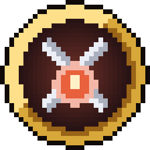
전사
기력 · 초당 6 회복
앞장서서 몬스터를 막아내는 근접 전투 직업. 튼튼하고 여러 적을 한 번에 상대한다.
-
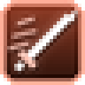
Q돌진 베기
앞으로 돌진하며 지나가는 길의 적을 벤다.
-
E대지 강타
땅을 내리쳐 주변 4칸의 적에게 피해를 주고 느리게 만든다.
-
R불굴의 함성 퀘스트로 해방
8초간 피해를 덜 받고 보호막을 얻는다. 주변 동료의 힘이 오르고, 몬스터가 나를 노린다.
연대기
기원전 666년
악이 없던 세계에서 악의 씨앗이 꿈틀거렸다.
서기 666년
사람들의 고통을 먹고 자란 씨앗이 피어났다. 정체 모를 몬스터가 쏟아졌다.
서기 706년
롤랑이 홀로 몬스터 군세를 막아내고, 혼자서는 안 된다는 걸 깨달아 모험가 길드를 세웠다.
지금
당신이 길드에 이름을 올린다.
0.3 업데이트
0.2 업데이트
01기본
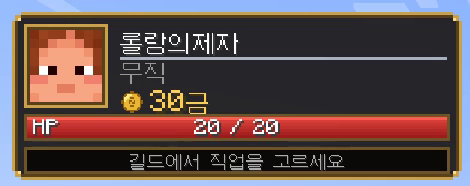
왼쪽 위 HUD: 얼굴 · 이름 · 직업 · 잔액 · HP · 마나(마법사·성직자) 또는 기력(전사·궁수·도적)
PvP 없음칼 · 화살 · 스킬 모두 플레이어에게 피해 없음 (결투 제외)
블록은 내 땅에서만공용 구역 캐기 · 놓기 불가 · 남의 땅은 문도 못 엶

기력 · 초당 6 회복
앞장서서 몬스터를 막아내는 근접 전투 직업. 튼튼하고 여러 적을 한 번에 상대한다.

Q돌진 베기
앞으로 돌진하며 지나가는 길의 적을 벤다.
E대지 강타
땅을 내리쳐 주변 4칸의 적에게 피해를 주고 느리게 만든다.
R불굴의 함성 퀘스트로 해방
8초간 피해를 덜 받고 보호막을 얻는다. 주변 동료의 힘이 오르고, 몬스터가 나를 노린다.
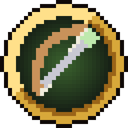
기력 · 초당 6 회복
멀리서 화살로 적을 쓰러뜨리는 원거리 직업. 스트레이를 잡아 얼음 화살을 해방한다.
Q연사
바라보는 방향으로 화살 3발을 빠르게 쏜다.
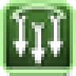
E화살비
바라보는 곳에 화살 30발을 쏟아붓는다.
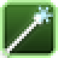
R얼음 화살 퀘스트로 해방
맞은 적을 얼려 크게 느리게 만든다.
마나 · 초당 4 회복
마나로 불과 얼음을 다루는 마법 직업. 강력하지만 몸이 약하다.
Q화염구
바라보는 적에게 불꽃을 날려 피해를 주고 불태운다.
E서리 고리
주변 5칸의 적을 얼려 피해를 주고 거의 멈추게 한다.
R순간이동 퀘스트로 해방
바라보는 방향으로 최대 10칸 순간이동한다.
마나 · 초당 4 회복
동료를 치유하고 축복하는 지원 직업. 언데드에게 특히 강하다.
Q치유의 빛
나와 주변 6칸의 동료 체력을 회복하고 독을 없앤다.
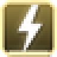
E신성 강타
바라보는 적에게 빛의 벼락을 내린다. 언데드에게 2배.
R축복 퀘스트로 해방
주변 8칸의 동료에게 10초간 재생과 힘을 준다.
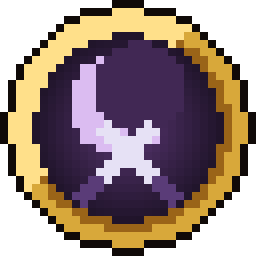
기력 · 초당 6 회복
그림자에 숨어 적의 등 뒤를 노리는 직업. 빠르고 날카롭다.
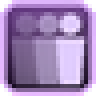
Q그림자 도약
바라보는 적의 등 뒤로 순간이동해 찌른다.
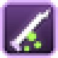
E독칼 회오리
주변 3.5칸의 적을 베고 중독시킨다.
R은신 퀘스트로 해방
6초간 투명해지고 빨라진다. 나를 쫓던 몬스터가 놓친다.
03기본
전사
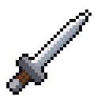
견습 기사의 검
일반
제작비 1금
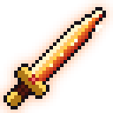
화염의 장검
희귀 · 화염 · 불태움
제작비 5금
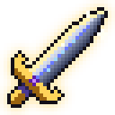
롤랑의 대검
영웅 · 흡혈 · 피해의 15% 회복
제작비 20금
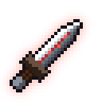
톱날 대검
영웅 · 치명 · 1.5배 피해
제작비 30금
궁수
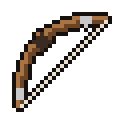
사냥꾼의 활
일반
제작비 1금
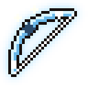
서리 장궁
희귀 · 서리 · 감속
제작비 5금
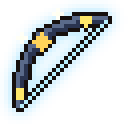
폭풍의 장궁
영웅 · 뇌전 · 번개
제작비 20금
마법사
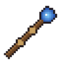
견습 마법사의 지팡이
일반
제작비 1금
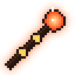
화염의 지팡이
희귀 · 화염 · 불태움
제작비 5금
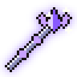
대마법사의 홀
영웅 · 순환 · 공격 시 마나 회복
제작비 20금
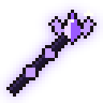
마검 지팡이
영웅 · 순환 · 공격 시 마나 회복
제작비 30금
성직자
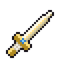
순례자의 성검
일반 · 신성 · 언데드 추가 피해
제작비 1금
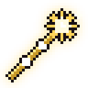
빛의 홀
희귀 · 신성 · 언데드 추가 피해
제작비 5금
성녀의 철퇴
영웅 · 흡혈 · 피해의 15% 회복
제작비 20금
도적
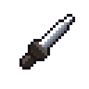
도둑의 단검
일반
제작비 1금
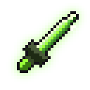
맹독의 쌍검
희귀 · 맹독 · 중독
제작비 5금
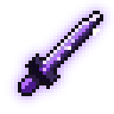
그림자 송곳니
영웅 · 치명 · 1.5배 피해
제작비 20금
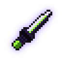
그림자 낫
영웅 · 맹독 · 중독
제작비 30금
| 목표 단계 | ★ | ★★ | ★★★ | ★★★★ | ★★★★★ |
|---|---|---|---|---|---|
| 성공 확률 | 90% | 75% | 60% | 45% | 30% |
| 강화석 | 1 | 1 | 2 | 3 | 4 |
| 비용 | 1금 | 2금 | 4금 | 8금 | 16금 |
04기본
/송금으로 바로 보내기/땅 공유로 친구 초대050.3 업데이트
새 몬스터 3종 · 토벌 퀘스트 · 엘리트 · 필드 보스 · 던전 · 도감
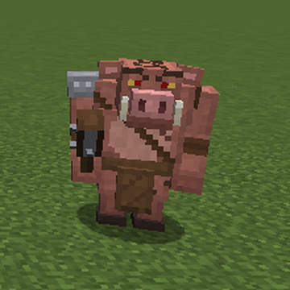
E급 들판 몬스터
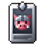
[노말] 돼지 전사 카드 · 방어구 체력 +1~15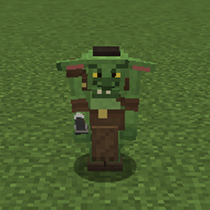
숲의 무리 몬스터
[노말] 고블린 카드 · 무기 공격 속도 +0.03~0.12
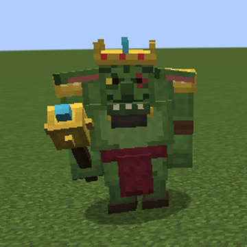
필드 보스
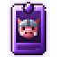
[에픽] 고블린 왕 카드 · 무기 공격력 +0.3~2.5동쪽 숲 고블린 소굴 0.3 신규
패턴 내려찍기 · 졸개 소환 · 분노(체력 절반)
보상 16금 · 경험치 900 · 강화석 ×3, 고대의 핵 ×1 (50%), 무작위 속성석 ×1 · 고블린 왕 카드 25%
북쪽 폐허
패턴 내려찍기 · 졸개 소환 · 분노(체력 절반)
보상 15금 · 경험치 800 · 강화석 ×3, 고대의 핵 ×1 (50%), 무작위 속성석 ×1, 에픽 이상 각인 카드 ×1 (20%) · 타락한 기사 카드 15%
동쪽 숲
패턴 돌진 · 내려찍기 · 분노(체력 절반)
보상 18금 · 경험치 900 · 강화석 ×3, 고대의 핵 ×1 (50%), 무작위 속성석 ×1, 다이아몬드 ×2 · 숲의 파괴자 카드 15%
얼어붙은 호수
패턴 서리 폭발 · 졸개 소환 · 순간이동 · 분노(체력 절반)
보상 18금 · 경험치 900 · 강화석 ×3, 고대의 핵 ×1 (50%), 서리의 속성석 ×1, 에픽 이상 각인 카드 ×1 (20%) · 서리 군주 카드 15%
| 구조물 | 보스 | 체력 | 패턴 | 보상 |
|---|---|---|---|---|
| 사막 피라미드 | 「모래 파라오」 | 200 | 내려찍기 · 졸개 소환 | 고대의 핵 ×1, 강화석 ×2, 금 주괴 ×6 |
| 밀림 사원 | 「밀림의 우상」 | 180 | 서리 폭발 · 졸개 소환 | 고대의 핵 ×1, 강화석 ×2, 에메랄드 ×4 |
| 약탈자 전초기지 | 「약탈단 대장」 | 220 | 돌진 · 내려찍기 · 분노(체력 절반) | 고대의 핵 ×1, 강화석 ×2, 변명자 카드 ×1 (30%) |
| 삼림 대저택 | 「저택의 주인」 | 260 | 순간이동 · 졸개 소환 · 서리 폭발 | 고대의 핵 ×2, 강화석 ×3, 불사의 토템 ×1 (50%) |
| 시련의 회당 | 「시련의 폭풍」 | 200 | 순간이동 · 서리 폭발 | 고대의 핵 ×1, 강화석 ×2, 브리즈 막대 ×3 |
| 요새 | 「엔드 수문장」 | 260 | 순간이동 · 내려찍기 · 분노(체력 절반) | 고대의 핵 ×2, 강화석 ×3, 엔더 진주 ×6 |
| 난파선 | 「유령 선장」 | 180 | 내려찍기 · 졸개 소환 | 고대의 핵 ×1, 강화석 ×2, 앵무조개 껍데기 ×1 |
| 늪지 오두막 | 「늪지 마녀 모르가」 | 150 | 서리 폭발 · 순간이동 · 졸개 소환 | 고대의 핵 ×1, 강화석 ×2, 맹독의 속성석 ×1 |
| 네더 요새 | 「요새의 화염 군주」 | 240 | 내려찍기 · 졸개 소환 · 분노(체력 절반) | 고대의 핵 ×1, 강화석 ×2, 화염의 속성석 ×1 |
| 보루 잔해 | 「피글린 전쟁군주」 | 260 | 돌진 · 내려찍기 · 분노(체력 절반) | 고대의 핵 ×2, 강화석 ×3, 금 블록 ×2 |
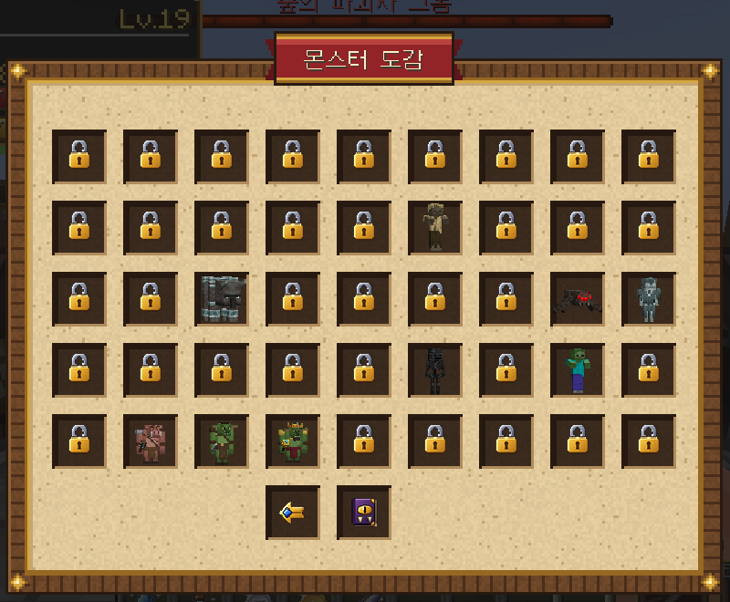
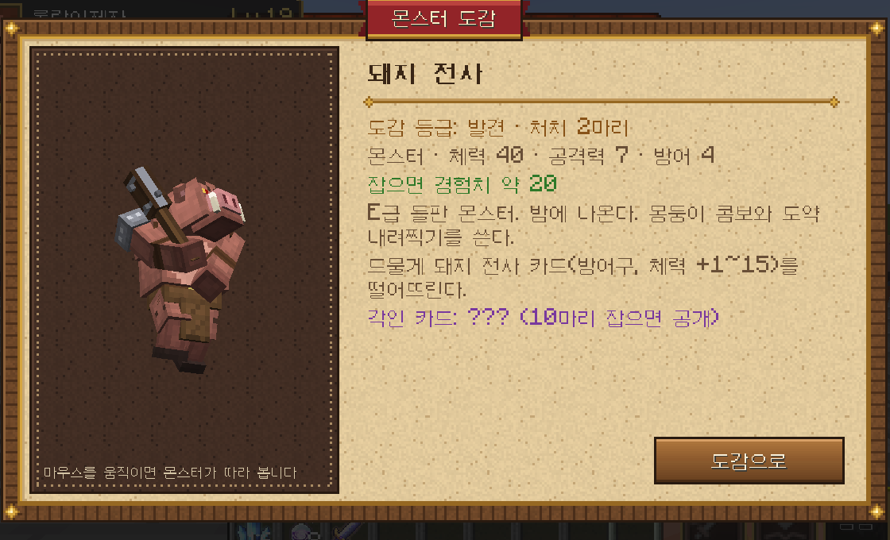
060.3 업데이트
걸음새 · 가속 · 스태미너 · 부상 · 충돌
070.3 업데이트
퀘스트 게시판 · 메뉴 창 · 버튼 아이콘 · 아이템 그림
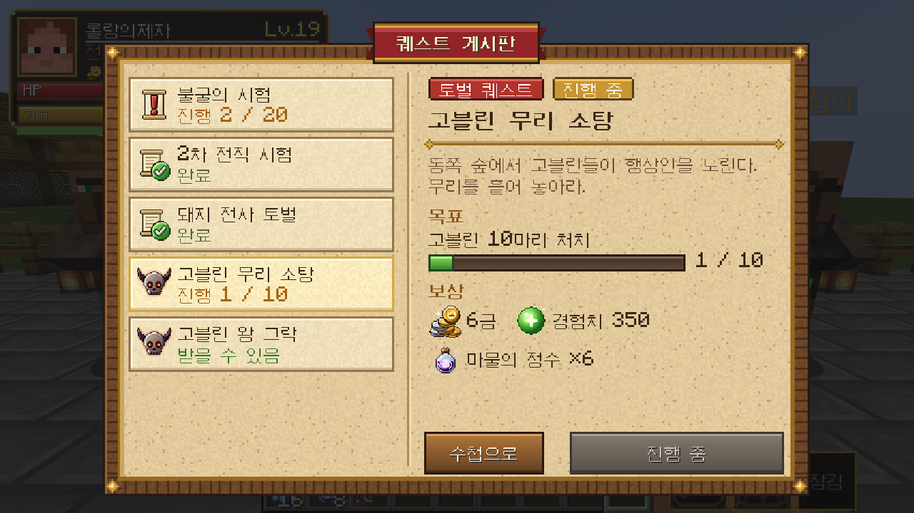
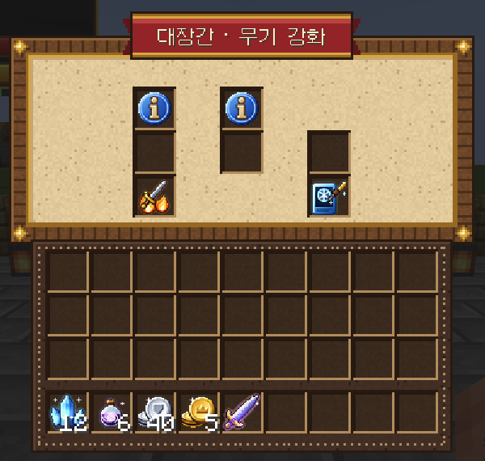
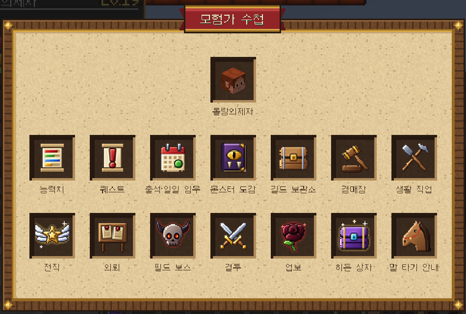
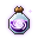
마물의 정수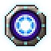
고대의 핵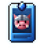
카드 레어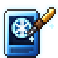
각인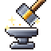
강화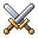
결투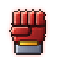
공격력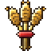
농부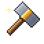
대장장이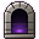
던전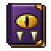
도감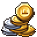
돈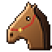
말080.2 업데이트
레벨 · 스탯 · 직업 퀘스트 · 2차/3차 전직 · V 스킬 · 모험가 수첩
| 스탯 | 1포인트 | 최대(100) |
|---|---|---|
| 공격력 | 주는 피해 +0.5% | +50% |
| 체력 | 최대 체력 +0.2 | +20 |
| 민첩 | 이동 속도 +0.15% | +15% |
| 마나 | 마나·기력 +1 · 회복 +0.02/초 | +100 · +2/초 |
| 레벨 | 다음까지 | 누적 | 포인트 |
|---|---|---|---|
| Lv.2 | 78 | 52 | 3 |
| Lv.5 | 180 | 380 | 12 |
| Lv.10 | 430 | 1,740 | 27 |
| Lv.15 | 780 | 4,550 | 42 |
| Lv.20 | 1,230 | 9,310 | 57 |
| Lv.30 | 2,430 | 26,680 | 87 |
| Lv.35 | 3,180 | 40,290 | 102 |
| Lv.50 | 6,030 | 106,820 | 147 |
전사 · 불굴의 시험
좀비 · 허스크 · 드라운드 · 좀비 주민 20마리
R 불굴의 함성 · 3금 · 경험치 150
궁수 · 얼음 화살 해방
스트레이 10마리
R 얼음 화살 · 3금 · 경험치 150
마법사 · 공간 도약의 비밀
엔더맨 5마리
R 순간이동 · 3금 · 경험치 150
성직자 · 망자 정화
언데드 전부 20마리
R 축복 · 3금 · 경험치 150
도적 · 거미의 그림자
거미 · 동굴 거미 15마리
R 은신 · 3금 · 경험치 150
전사
2차 · Lv.15 · 20금
체력 +30, 공격력 +5 · 스킬 위력 +10%
V방패 돌격
8칸 돌진해 부딪힌 적을 날리고 기절시킨다. 나는 6초간 보호막과 저항을 얻는다.
3차 · Lv.35 수호기사
체력 +40, 공격력 +10 · 스킬 위력 +20%
2차 · Lv.15 · 20금
공격력 +25, 체력 +10 · 스킬 위력 +15%
V피의 광란
8초간 주는 피해 +40%, 준 피해의 20%를 흡혈. 대신 받는 피해 +15%.
3차 · Lv.35 전쟁군주
공격력 +35, 체력 +15 · 스킬 위력 +25%
궁수
2차 · Lv.15 · 20금
공격력 +25, 민첩 +5 · 스킬 위력 +15%
V관통 사격
바라보는 32칸 직선 위의 적을 모두 꿰뚫는다.
3차 · Lv.35 매의 눈
공격력 +35, 민첩 +10 · 스킬 위력 +25%
2차 · Lv.15 · 20금
민첩 +20, 체력 +15 · 스킬 위력 +10%
V야수의 부름
20초간 늑대 두 마리가 나타나 함께 싸운다.
3차 · Lv.35 숲의 파수꾼
민첩 +25, 체력 +25 · 스킬 위력 +20%
마법사
2차 · Lv.15 · 20금
마나 +40, 공격력 +10 · 스킬 위력 +25%
V메테오
1초 뒤 바라보는 곳에 운석이 떨어져 반경 4.5칸을 폭발시키고 불태운다.
3차 · Lv.35 현자
마나 +60, 공격력 +15 · 스킬 위력 +35%
2차 · Lv.15 · 20금
공격력 +15, 체력 +15, 마나 +10 · 스킬 위력 +10%
V마력 검
앞쪽 5칸을 마력으로 베고 마나 15를 되찾는다. 8초간 모든 피해 +30%.
3차 · Lv.35 룬 기사
공격력 +25, 체력 +25, 마나 +15 · 스킬 위력 +20%
성직자
2차 · Lv.15 · 20금
마나 +30, 체력 +15 · 스킬 위력 +15%
V성역
10초간 반경 6칸 성역: 동료는 초당 체력 2 회복·독 해제, 언데드는 피해를 입는다.
3차 · Lv.35 성인
마나 +45, 체력 +25 · 스킬 위력 +30%
2차 · Lv.15 · 20금
공격력 +15, 체력 +20 · 스킬 위력 +10%
V심판의 망치
뛰어올라 내려찍어 반경 4.5칸에 피해·기절. 언데드에게 2배.
3차 · Lv.35 심판관
공격력 +25, 체력 +30 · 스킬 위력 +20%
도적
2차 · Lv.15 · 20금
공격력 +25, 민첩 +10 · 스킬 위력 +15%
V급소 찌르기
적의 등 뒤로 순간이동해 찌른다. 나를 노리지 않던 적이면 2.5배, 아니면 1.5배.
3차 · Lv.35 그림자 군주
공격력 +35, 민첩 +15 · 스킬 위력 +25%
2차 · Lv.15 · 20금
마나 +20, 민첩 +10, 공격력 +10 · 스킬 위력 +15%
V역병 구름
바라보는 곳에 8초간 독구름 (반경 4칸). 적만 중독·약화되고 지속 피해를 입는다.
3차 · Lv.35 역병군주
마나 +30, 민첩 +15, 공격력 +15 · 스킬 위력 +30%
스킬 키
Q E 기본 · R 직업 퀘스트 · V 2차 전직 · K 수첩
무기를 들었을 때만 스킬 · 그 밖에는 원래 키(Q 버리기, E 인벤토리) · 조작 설정 "모험가 길드"에서 변경
090.2 업데이트
각인 카드 · 속성 부여 · 변형 무기
| 카드 | 나오는 곳 | 확률 | 장착 | 능력치 | |
|---|---|---|---|---|---|
| [노말] 돼지 전사 카드 | 돼지 전사 | 2% | 방어구 | 체력 +1~15 | |
| [노말] 고블린 카드 | 고블린 | 1.5% | 무기 | 공격 속도 +0.03~0.12 | |
| [노말] 돼지 카드 | 돼지 | 1% | 방어구 | 체력 +1~4 | |
| [노말] 소 카드 | 소 | 1% | 방어구 | 방어력 +0.5~1.5 | |
| [노말] 닭 카드 | 닭 | 1% | 방어구 | 이동 속도 +1%~3% | |
| [노말] 양 카드 | 양 | 1% | 방어구 | 넉백 저항 +2%~6% | |
| [노말] 좀비 카드 | 좀비 | 0.8% | 방어구 | 체력 +1~3 | |
| [노말] 허스크 카드 | 허스크 | 0.8% | 방어구 | 방어력 +0.5~2 | |
| [노말] 스켈레톤 카드 | 스켈레톤 | 0.8% | 무기 | 공격력 +0.2~1 | |
| [노말] 거미 카드 | 거미 | 0.8% | 방어구 | 이동 속도 +1%~4% | |
| [노말] 약탈자 카드 | 약탈자 | 0.8% | 무기 | 공격 속도 +0.05~0.15 | |
| [노말] 슬라임 카드 | 슬라임 | 0.6% | 방어구 | 넉백 저항 +3%~8% | |
| [레어] 크리퍼 카드 | 크리퍼 | 0.5% | 무기 | 공격력 +0.5~1.5 | |
| [레어] 스트레이 카드 | 스트레이 | 0.6% | 방어구 | 최대 마나·기력 +3~10 | |
| [레어] 드라운드 카드 | 드라운드 | 0.5% | 방어구 | 체력 +2~5 | |
| [레어] 엔더맨 카드 | 엔더맨 | 0.5% | 방어구 | 최대 마나·기력 +5~15 | |
| [레어] 마녀 카드 | 마녀 | 0.6% | 무기 | 스킬 위력 +3%~8% | |
| [레어] 블레이즈 카드 | 블레이즈 | 0.5% | 무기 | 공격력 +0.8~2 | |
| [에픽] 고블린 왕 카드 | 필드 보스 고블린 왕 그락 | 25% | 무기 | 공격력 +0.3~2.5 | |
| [에픽] 변명자 카드 | 변명자 | 0.4% | 무기 | 공격력 +0.3~2.5 | |
| [에픽] 위더 스켈레톤 카드 | 위더 스켈레톤 | 0.4% | 무기 | 공격력 +1~2.5 | |
| [에픽] 소환사 카드 | 소환사 | 1% | 방어구 | 최대 마나·기력 +10~30 | |
| [에픽] 파괴수 카드 | 파괴수 | 1% | 방어구 | 체력 +4~10 | |
| [에픽] 브리즈 카드 | 브리즈 | 0.6% | 방어구 | 이동 속도 +3%~8% | |
| [전설] 워든 카드 | 워든 | 20% | 방어구 | 체력 +6~16 | |
| [전설] 타락한 기사 카드 | 필드 보스 타락한 기사 발더 | 15% | 무기 | 공격력 +2~4 | |
| [전설] 숲의 파괴자 카드 | 필드 보스 숲의 파괴자 그롬 | 15% | 방어구 | 체력 +5~12 | |
| [전설] 서리 군주 카드 | 필드 보스 서리 군주 이그나 | 15% | 무기 | 스킬 위력 +8%~20% |
물리 85% + 화염 30%
2배: 절지동물(거미·벌레), 크리퍼
0: 블레이즈, 마그마 큐브, 위더 스켈레톤, 스트라이더
물리 85% + 서리 30%
2배: 블레이즈, 마그마 큐브, 허스크
0: 스트레이, 북극곰, 눈 골렘
물리 80% + 뇌전 35%
2배: 드라운드, 가디언, 엘더 가디언, 브리즈
0: -
물리 85% + 맹독 25%
2배: 마녀, 약탈자, 변명자, 소환사
0: 언데드 전부
물리 85% + 신성 20%
2배: 언데드 전부
0: -
물리 90% + 비전 15% · 스킬 위력 +20%
2배: 엔더맨, 셜커, 엔더마이트
0: -
전사
톱날 대검 · 접힘
공격력 9 · 공격 속도 1.8 · 체력 +2
치명 · 1.5배 피해
톱날 대검 · 펼침
공격력 15 · 공격 속도 0.8 · 체력 +4 · 넉백 저항 +30%
흡혈 · 피해의 15% 회복
재료: 네더라이트 주괴 ×1, 고대의 핵 ×2, 엘리트의 전리품 ×4, 마물의 정수 ×16 · 제작비 30금
마법사
마검 지팡이 · 지팡이
공격력 4 · 공격 속도 1 · 마나 +60 · 스킬 위력 +60%
순환 · 공격 시 마나 회복
마검 지팡이 · 검
공격력 11 · 공격 속도 1.6 · 마나 +20 · 스킬 위력 +20%
화염 · 불태움
재료: 고대의 핵 ×2, 자수정 조각 ×16, 다이아몬드 ×2, 마물의 정수 ×16 · 제작비 30금
도적
그림자 낫 · 단검
공격력 8 · 공격 속도 2.2 · 이동 속도 +10%
맹독 · 중독
그림자 낫 · 낫
공격력 13 · 공격 속도 1.1 · 이동 속도 +4%
치명 · 1.5배 피해
재료: 고대의 핵 ×2, 네더라이트 파편 ×2, 엔더 진주 ×6, 마물의 정수 ×16 · 제작비 30금
100.2 업데이트
출석 · 일일 임무 · 의뢰 · 길드 보관소 · 히든 상자
| 돈 | 경험치 | 물건 | |
|---|---|---|---|
| 1일차 | 3금 | 50 | 마물의 정수 ×5, 빵 ×16 |
| 2일차 | 3금 50은 | 60 | 강화석 ×2 |
| 3일차 | 4금 | 70 | 귀환 주문서 ×2, 말 치료 붕대 ×2 |
| 4일차 | 4금 50은 | 80 | 강화석 ×2, 마물의 정수 ×5 |
| 5일차 | 5금 | 90 | 무작위 각인 카드 ×1 |
| 6일차 | 6금 | 100 | 강화석 ×3, 지혜 주문서 ×1 |
| 7일차 | 10금 | 200 | 무작위 속성석 ×1, 에픽 이상 각인 카드 ×1, 엘리트의 전리품 ×2 |
| 등급 | 시간당 | 비용/시간 | 최대 | 희귀 |
|---|---|---|---|---|
| 초급 의뢰 | 10마리 | 50은 | 24시간 | ×1 |
| 중급 의뢰 | 25마리 | 1금 50은 | 24시간 | ×1.5 |
| 상급 의뢰 | 50마리 | 4금 | 24시간 | ×2.5 |
| 등급 | 돈 | 경험치 | 물건 |
|---|---|---|---|
| 작은 히든 상자 | 3금 | 80 | 마물의 정수 ×4, 강화석 ×1 (50%) |
| 히든 상자 | 8금 | 200 | 강화석 ×2, 무작위 속성석 ×1 (50%), 무작위 각인 카드 ×1 (50%) |
| 전설의 히든 상자 | 25금 | 600 | 강화석 ×4, 고대의 핵 ×1, 무작위 속성석 ×1, 에픽 이상 각인 카드 ×1 |
/보관함 · 수첩 · 길드 접수원에서 보관소 열기/guild mail hand|money (접속 안 한 사람 포함)110.2 업데이트
생활 직업 · 주문서 · 경매장 · 결투 · 업보
/경매 등록 <가격> · 수수료 5% · 1인 10개 · 72시간 후 반환 · 접속 안 해도 판매 대금 입금/결투 → /결투 수락) · 결투장 이동 · 3초 카운트다운 · 체력 0 = 패배(사망 · 아이템 손실 없음) · 3분 무승부승급 과제: 밀 32개 납품 → 당근 32개·감자 32개 납품 → 호박 16개·수박 조각 32개 납품 → 건초 더미 16개 납품
승급 과제: 대구 16마리 납품 → 연어 16마리 납품 → 열대어 4마리·복어 4마리 납품 → 앵무조개 껍데기 2개 납품
승급 과제: 철 주괴 32개 납품 → 금 주괴 16개·마물의 정수 16개 납품 → 다이아몬드 8개 납품 → 엘리트의 전리품 8개 납품
승급 과제: 종이 64장 납품 → 책 16권 납품 → 청금석 32개·마물의 정수 16개 납품 → 자수정 조각 32개 납품
우클릭으로 사용
/업보 정화 <양> · 업보 1당 30은12안내
/이름 <이름> | 이름 정하기 (한 번만) |
/잔액 · /송금 <은화> <이름> | 잔액 보기 · 돈 보내기 |
/집 · /길드 | 내 집으로 · 길드로 이동 |
/땅 공유 <이름> | 내 땅에 친구 들이기 |
/주식 · /직업 | 증권거래소 열기 · 내 스킬 보기 |
/수첩 (K) | 모험가 수첩: 모든 메뉴 |
/능력치 · /퀘스트 · /전직 | 스탯 찍기 · 퀘스트 게시판 · 전직 |
/도감 · /보관함 · /출석 | 몬스터 도감 · 길드 보관소 · 출석·일일 임무 |
/의뢰 · /생활직업 | 자동 사냥 의뢰 · 생활 직업 |
/경매 · /경매 등록 <은화> | 경매장 · 손에 든 물건 올리기 |
/결투 <이름> · /결투 수락 | 결투 신청 · 받기 (거절 · 포기) |
/업보 · /업보 정화 <양> | 업보 보기 · 화폐로 씻기 |
/필드보스 · /필드보스 소환 <id> | 필드 보스 일정 · 엘리트 전리품으로 소환 |
guild-0.3.0.jar + GeckoLib 4.9.3(NeoForge 1.21.1, 새 몬스터 모델용). server.properties: spawn-npcs=true, spawn-animals=true, spawn-monsters=true./guild setspawn, NPC 자리마다 /guild npc guild 등./guild plot pos1 · pos2 → /guild plot create house1 house 1500./guild npc auction(경매인) · life(생활 직업) · request(의뢰)./guild arena set, 필드 보스 자리마다 /guild boss setspawn <id>, 숨긴 상자를 바라보고 /guild hidden add small|medium|large./guild xp|level <대상> <값>, /guild elite <몹>, /guild boss spawn|setspawn|next <id>, /guild mail hand|money …(점검 보상, 접속 안 한 사람 포함),
/guild card|element|scroll <id>, /guild karma <대상> <값>, /guild quest <대상> <id>, /guild daily reset, /guild dungeon reset, /guild hidden list|remove.
새 몬스터 소환: /summon guild:pig_warrior|goblin|goblin_king (크리에이티브 탭에 스폰 알).
직업·스킬 수치(jobs.json), 상점 품목과 가격(shops.json), 무기 레시피·변형(weapons.json), 회사(stocks.json), 기본 자금·보호 규칙·강화 확률(settings.json),
레벨·스탯·퀘스트·전직(progression.json), 각인 카드(cards.json), 엘리트·보스·던전·속성·히든 상자·말(world.json), 출석·일일 임무·의뢰·경매·결투·업보(daily.json), 생활 직업·레시피(life.json). 고친 뒤 /guild reload.